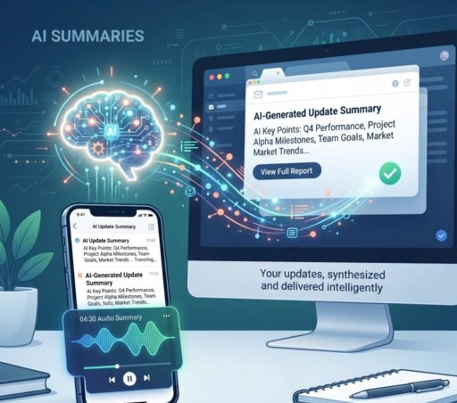
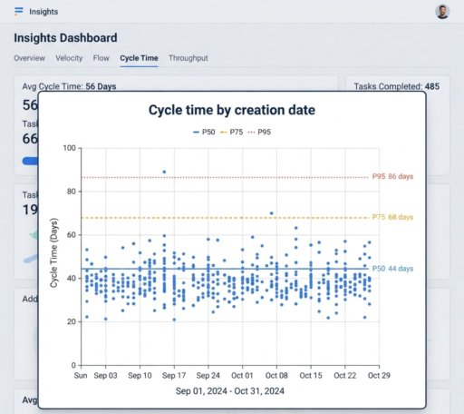
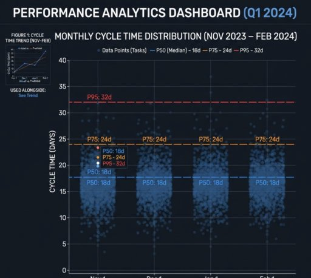
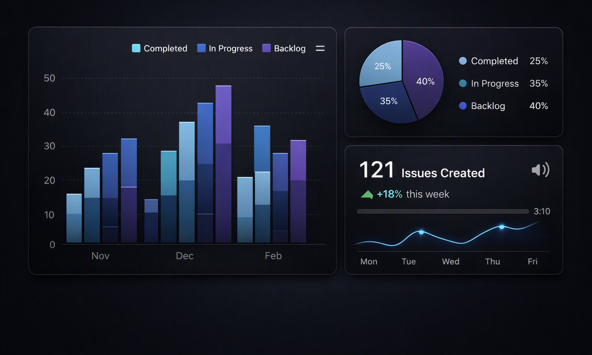
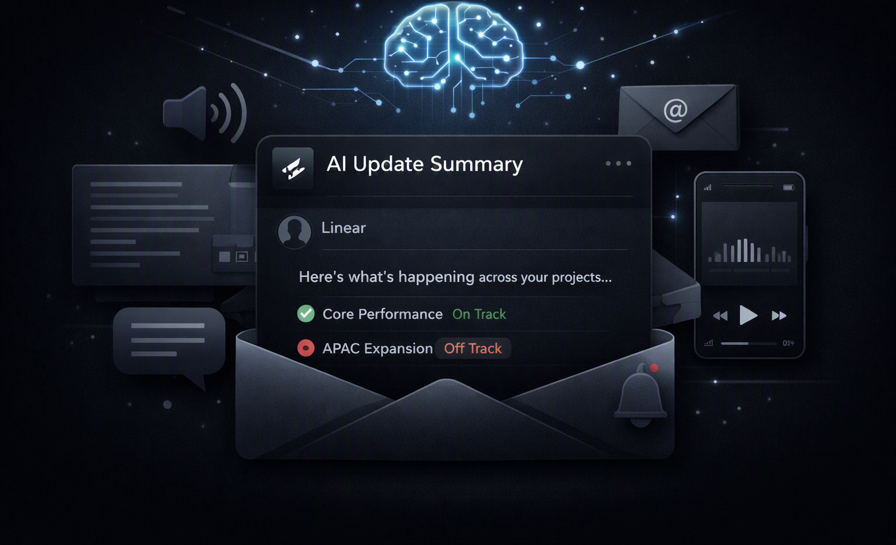
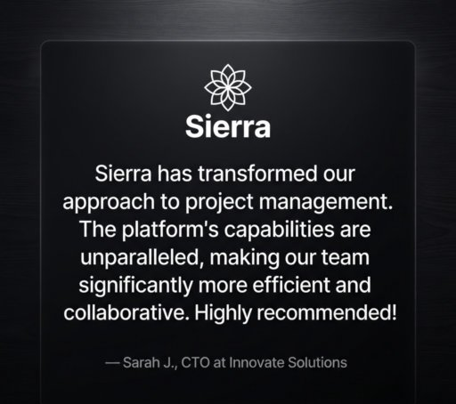

Core Performance
Engineering velocity continues improving across multiple product squads with deployment frequency increasing week after week.
● On TrackStay informed with a centralized feed showing project health, engineering activity, AI insights, milestones, blockers, and release updates across every team.
Engineering velocity continues improving across multiple product squads with deployment frequency increasing week after week.
● On TrackAdditional testing is required before rollout due to inconsistent telemetry synchronization detected during QA.
● At RiskRegional launch preparation is progressing successfully with localization, compliance reviews and deployment milestones completed.
● On TrackReceive personalized AI-generated summaries that highlight progress, blockers, decisions, and important updates from every project across your organization.

Instead of searching through hundreds of issues, discussions, and pull requests, Nexora AI prepares concise summaries tailored to your projects, priorities, and responsibilities.
Choose between written summaries or short audio digests delivered directly to your inbox every day.
Learn MorePowerful analytics help engineering leaders understand delivery performance, identify bottlenecks, and improve product velocity.

Measure how quickly work progresses from creation through completion with percentile reporting and historical comparisons.

Visualize workload distribution, engineering throughput, and release consistency using interactive analytics dashboards.
Build customizable dashboards combining engineering metrics, roadmap progress, sprint health, and operational performance into one centralized workspace.

Create beautiful dashboards with customizable widgets, charts, reports, and KPI tracking for every department.

Sync your reporting with Google Sheets, Excel, Airbyte, Power BI, Tableau, and other business intelligence platforms.
Monitor every phase of your product lifecycle with real-time visibility, keeping engineering, design, and product teams aligned from idea to launch.
Capture ideas, requests, customer feedback, and feature proposals in one centralized location before work begins.
Create roadmaps, prioritize initiatives, estimate effort, and align stakeholders around clear objectives.
Coordinate engineering work with automated workflows, AI agents, sprint planning, and development tracking.
Review code changes, deployment status, pull requests, and release quality with complete visibility.
Stay informed wherever you are with AI-generated audio briefings summarizing engineering progress, project health, and key updates.
Receive concise spoken summaries covering completed work, upcoming priorities, blockers, and team achievements.
Listen during your commute, meetings, or whenever you need a quick overview of your organization's product activity.
Thousands of organizations rely on Nexora to improve collaboration, accelerate delivery, and gain complete visibility into product execution.
"Nexora has become the single source of truth for everything our product and engineering teams are building. Everyone stays aligned and informed."— Zack Reneau-Wedeen, Head of Product

"The analytics dashboards and AI summaries help our leadership team understand progress instantly without requesting weekly reports."— Jonathan Biddle, Director of Engineering
Nexora helps product managers, engineering teams, startups, and enterprises monitor progress, automate workflows, and deliver products faster with complete confidence.